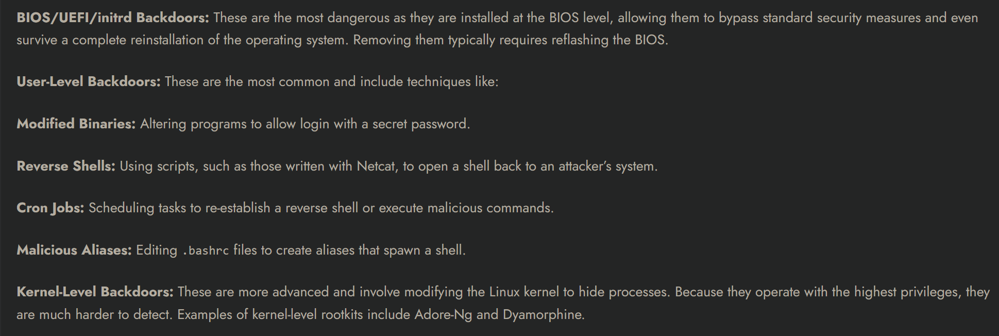
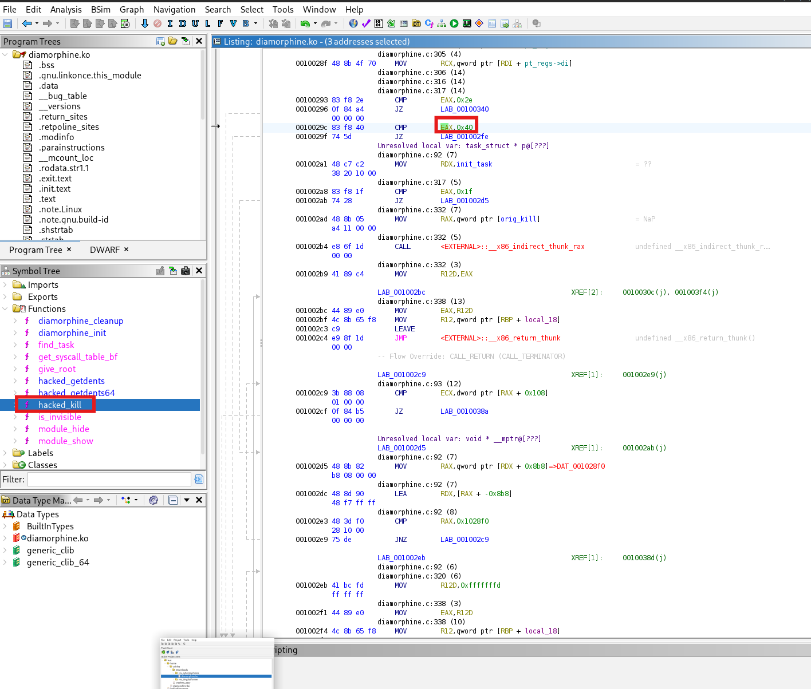

So I searched a bit and I found that a rootkit is malware designed to hide its own presence (and often an attacker's access) on a system. It is frequently used together with a backdoor: the backdoor gives the access, the rootkit keeps it hidden. I also found that there are multiple types of rootkits/backdoors:

First Steps
And this challenge is a kernel level one. I downloaded the zip file, unzipped it and opened it in Ghidra, and beside that I used Netcat to connect to the IP address.
The first thing I did was launch file file.name to see the nature of the file: it's an ELF (a kernel module .ko).
Then I looked inside and I found that it's a Diamorphine rootkit. I didn't know about it, so I researched and found the GitHub repo:
https://github.com/m0nad/Diamorphine
Understanding Rootkit Behavior
Observations from the README (uninstall instructions):
The module starts hidden.
To make it visible, we need to use:
kill -63 0
Once visible, we can remove it with:
rmmod diamorphine
A Problem Appears
I attempted kill -63 0 to make the module visible.
The system crashed (Kernel Panic), which means the original Diamorphine code was probably modified.
Finding the Modified Kill Switch
I went back to Ghidra and searched for cmp instructions in hacked_kill().
I noticed multiple cmp instructions:
cmp eax, 0x40 (corresponds to kill -64 for root access)
cmp eax, 0x2E (new visibility toggle, corresponds to kill -46)
Testing kill -64 0 gives root access, so the attacker modified the rootkit to use different signals.

Removing the Rootkit
Gain root access:
kill -64 0
whoami # Should return "root"
Finding the Flag
Search the system for .txt files:
find / -type f -name "*.txt" 2>/dev/null
Retrieve the flag:
cat /path/to/flag.txt
Flag found :]
← Back Home